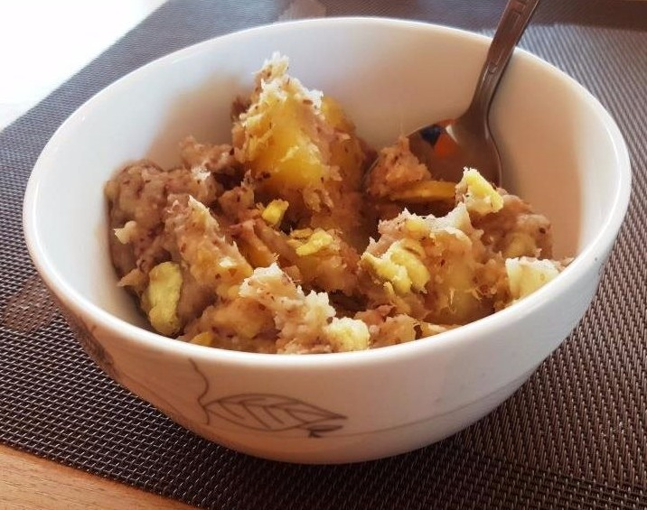

Futali is a traditional Malawian breakfast dish made from sweet potatoes (or pumpkin, cassava, or plantains) and groundnut (peanut) flour. It is a savory, nutrient-dense meal typically served warm with tea or coffee, and is never eaten with nsima.
Enjoy your meal!